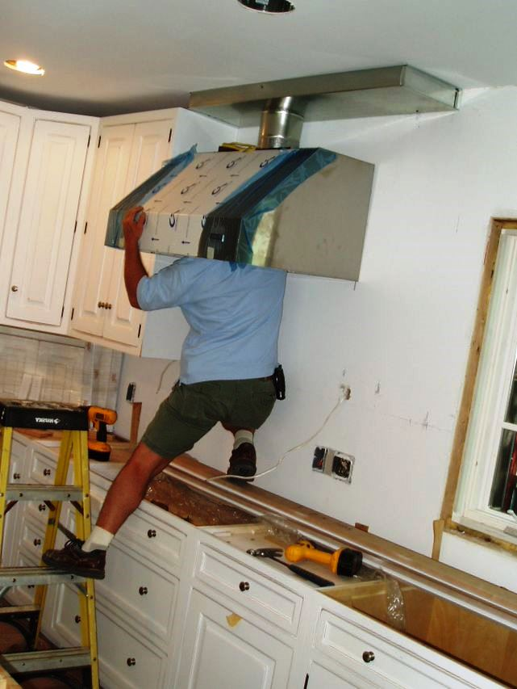
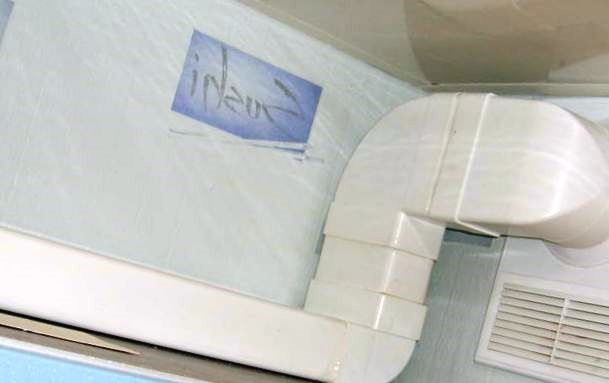
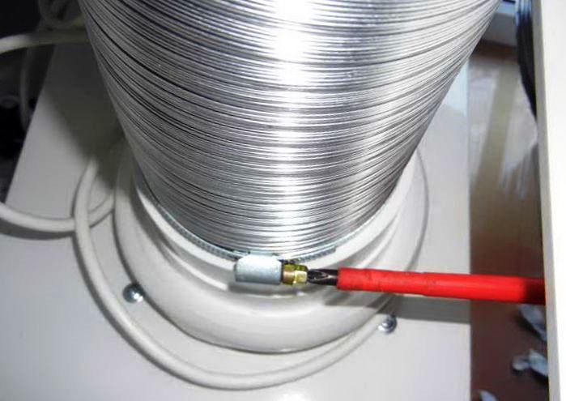

Качественный электромонтаж в Санкт-Петербурге и ленобласти, стаж 12 лет. Частный электрик, недорого и качественно.
Телефон - 8 904 642 08 57 Николай.

Установка вытяжки на кухне от частого электрика.
Все о вытяжках для кухни.
Сейчас очень востребована вытяжка для кухни, без неё остаётся копоть на потолке, запахи от приготовления еды расходятся по всему жилищу. Современная хозяйка при покупке новой кухни, обязательно покупает вытяжку. Очень важно, выбрать хорошую, качественную вытяжку. Ну и, конечно же, чтобы сочеталось с интерьером на кухне.

Как работает вытяжка.
В вытяжке находится фильтр, который улавливает запахи и копоть. Она работает по принципу принудительной вентиляции. Есть электрические и механические.
Виды вытяжек:
- Рециркуляционные. Фильтры, находящиеся в вытяжке очищают воздух в кухне, и выдувает его обратно.
- Проточный тип. Втягивает в себя воздух и очищает его, потом выпускает во внешнюю вентиляционную систему.
Сколько стоит установить вытяжки на кухне.
Цена работы от 4000 руб.
Ремонт вытяжки – от 1800 руб.
Поменять фильтр – о 1900 руб.

Вытяжки можно закрепить на стене или на потолке над плитой. Можно скрыть, чтобы не было видно в навесном шкафчике.
Вытяжки бывают потолочные и настенные. Их существует множество разновидностей, разных цветов и разных дизайнов.
На что нужно обращать внимание при покупке вытяжки.

Вытяжки рециркуляционные очищаются через два фильтра, один устраняет запахи, другой задерживают на себе копоть и масляные частицы.
Фильтр, который фильтрует копоть и масляные частицы съёмный, он похож на съёмные пластины из пластика. Такие фильтры бывают одноразовыми (которые после сильного загрязнения снимается и меняется) и многоразовые. Многоразовые фильтры состоят из алюминия или стали. Они не меняются, но их можно помыть после загрязнения.
Самый важный фильтр - это первый, который очищает воздух и задерживает копать. А без второго можно и обойтись.
Недорогие вытяжки бывают без фильтров, они очищают воздух в кухне внешней вентиляцией. С улицы обратно выпускается уже чистый воздух.
Внешний вид:
1. Подвесные вытяжки. Легко устанавливаются и стоят дёшево. Работает в циркуляционном режиме, фильтры многоразовые. Это самый популярный вид из-за лёгкого монтажа и небольшой цене.
2. Купольные вытяжки. Крепятся над плитой на стене, работает как в рециркуляторном режиме, так и в проточном.
3. Встроенная вытяжка. Устанавливается в навесном шкафчике и её практически не видно.
4. Островной тип. Её покупают, когда плита находится посреди комнаты. Работает в проточном режиме.
5. Выдвижная вытяжка компактная, удобная, незаметная.
Выбираем панель управления
Существует три типа панелей на внешней стороне вытяжки:
- Сенсорный. Очень удобная, включается от лёгкого прикосновения пальца.
- Слайдерный тип. Механический ползунок, перемещающийся по плоскости, с помощью его можно выбрать нужный режим.
- Кнопочный вид. Нажимая на кнопки, на панели выбирается нужный режим работы вытяжки.
В вытяжках нового поколения имеются дополнительные функции - это таймер и переключатель скоростей. При выборе вытяжки Удобнее сенсорное управление, но это будет стоить дороже, чем другие.
Как выбирать вытяжку для кухни?
Ширина стоит выбирать по размеру плиты или больше, если она будет меньше ширины плиты, то будет хуже очищать загрязнённые воздух. Обязательно, прежде чем покупать, нужно узнать у консультантов. Как работает, в каком режиме. Самые хорошие вытяжной режим.
Все вытяжки оснащены приборами освещения. Бывают они галогенные, лампы накаливания и светильники дневного света. Самый хороший вариант это галогеновые лампы, так как они потребляют мало электричества.
По каким критериям лучше всего выбирать вытяжку, чтобы она работала эффективно:
- Следует обратить внимание на давление воздуха, если показатели высокие, то и вытягивать будет хорошо.
- Эффективнее будет вытяжка, если она выведена на вентиляционную шахту.
- Фильтр должен быть очень плотным.
- Размер. Чем больше выдержка, тем лучше и быстрее очищается воздух.
 Поменять проводку в квартире.
Поменять проводку в квартире. Сколько будут стоить материалы.
Электрика в загородном доме стоимость работ.

Замена электропроводки в панельном доме.
Расценки на электропроводку квартир.
Замена проводки в хрущевке.
Электромонтаж в частном доме.
Электрика в загородном доме.
Сколько стоит замена электропроводки в двухкомнатной квартире?.
Электрик в новостройку однокомнатная квартира недорого.

Сколько стоит поменять электропроводку в 3-х комнатной квартире.